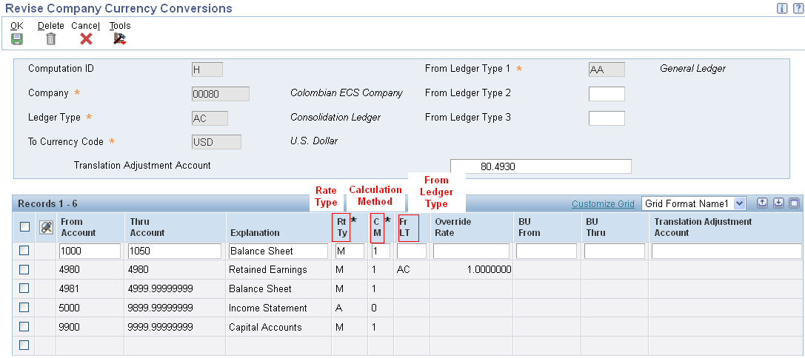

This document provides an overview of computations for balance restatement, lists prerequisites, and discusses how to set up computations.
Scope
This document is intended for Finance Functional users who will be involved in the multicurrency processing in the General Accounting system.
Details
Overview
Before you restate a company currency to another currency, you must set up computations that are used by the balance restatement program. These computations include:
Company.
Ranges of accounts.
Destination currency.
Source and destination ledger types.
When setting up computations, consider that:
You can set up more than one computation for a company. For example, you might have more than one computation if you perform what if analysis using different ledger types.
You can set up a computation to override the source ledger type for a range of accounts. This is especially useful if a range of accounts was previously restated into a particular ledger and you want to move or restate the amounts from that ledger to another ledger.
You can set up a computation to restate amounts from up to three source ledgers into one destination ledger, which is called the consolidation ledger (AC). The source ledgers must be in the same currency.
Primary Information for Computations
When you set up computations for balance restatement, you must provide the system with following primary information:
Rate Types and rates via the P1113
Calculation Methods
Translation Adjustment Accounts
Before you set up computations for balance restatement, lets understand how the system uses this information.
Rate Types
The system uses rate types to determine which exchange rate to use when it calculates new balances. For each range of accounts, you can enter a user-defined rate type.
Following are some of the examples for rate types:
Rate Type
Description
A (period average)
An average rate for the month.
This is generally used with income statement accounts.
M(month-end)
A period-end rate.
This is generally used with balance sheet accounts.
H (historical)
A historical rate.
This might be used for fixed asset accounts.
This rate can also be used to retain calculations when converting from another system to the EnterpriseOne system.
User-defined rate types
A user-defined rate.
For example, B can be used for a budget rate (different from an accounting rate) to create what-if budget amounts and comparisons.
You enter rate types in UDC table 11/RT.
You can enter as many rate types as needed.
Calculation Methods
You specify a calculation method for each range of accounts. The system uses the calculation method to determine which formula to use when it calculates currency conversions. The calculation methods are:
1: Cumulative Balance method.
Use for balance calculations. This method uses the year-to-date balance amount.
0: Net Period Balance method.
Use for period calculations. This method uses net period activity amount.
NOTE: Typically, you use these combinations for rate types and calculation methods:
Rate type M (month-end) with calculation method 1 (cumulative balance) for balance sheet accounts. M+1 = balance.
Rate type A (period average) with calculation method 0 (net period) for income accounts. A+ 0 = income.
The exceptions to this are usually based on legal requirements.
Following examples show the results of calculation methods 1 and 0:
In this example, the AC ledger balance amount for period 3 is 1430:
From Ledger Accounting Period
Period Amount
Period Ending Rate
Calculation
To Ledger Period Posting
Cumulative Balance
Beginning Balance
1000
0.90
1000 x 0.90
900
900
Period 1
100
1.10
(1000 + 100) × 1.10 − 900
310
1210
Period 2
200
1.05
(1300 × 1.05) − (900 + 310)
155
1365
Period 3
100
0.80
(1400 × 0.80) − (1210 + 155)
-245
1120
Example: Method 0 (Net Period Balance Calculation)
In this example, the AC ledger balance amount for period 3 is 80:
From Ledger Accounting Period
Period Amount
Average Rate
Calculation
To Ledger Period Posting
Period 1
100
1.10
100 × 1.10
110
Period 2
200
1.05
200 × 1.05
210
Period 3
100
0.80
100 × 0.80
80
Translation Adjustment Accounts
When you set up computations, you can specify the GL balance sheet accounts for translation adjustments. Translation adjustments are caused by the difference between rate types and their exchange rates and are tracked in translation adjustment accounts.
In P1114 application, you can setup Translation Adjustment Accounts in both header and detail. Depending on the type of translation adjustment, you enter an account on the Revise Company Currency Conversions form (P1114) as follows:
Translation Adjustment Account Header.
To create translation gain and loss amounts due to different rate types, specify account in the header area of the form, for example, for average and month-end rate types.
The system creates a balancing entry in Account Balance (F0902) table, which is necessary because of different rate types.
This amount for the balancing entry is a plug to force the restated consolidated ledger to balance. A single balancing entry is made for the entire computation.
The ledger total should always be zero unless you have not set up retained earnings by the recommended method.
Translation adjustment calculations that are used to create balancing entries are allowed only on balance sheet accounts.
Translation Adjustment Account Detail.
To create translation gain and loss amounts due to a change in the exchange rate within a period, specify account in the detail area of the form.
This entry is used only for analysis and is not a balancing entry.
The system calculates this amount for each range of accounts that are assigned computation method 1 (cumulative balance). The system does not allow a translation adjustment account for computation method 0.
For computation method 1, the translations gains and losses are calculated according to this formula: Translation adjustment amount = (prior period balance × prior period end rate) − (prior period balance × current period end rate) + (current period posting × current month average rate) − (current period posting × current month end rate).
The above calculations assume that the General Accounting Constants are set to the multiplier method for multi-currency. If the divisor method is selected the calculations use divisors instead of multipliers.
Key Point: If you specify a translation adjustment account in the header, it is used for differences caused by rounding in the entire calculation. The system totals debits and credits, then updates this account with the difference. If you specify a translation adjustment account in the detail area, it is used for differences for only the range of accounts specified on the associated detail line.
NOTE: While setting up Translation Adjustment Accounts, ensure the following:
The Translation Adjustment Account fields on the Revise Company Currency Conversions form (P1114) are optional. The system does not issue an error message if you leave either or both of these fields blank.
If you do not specify an account in either the header field or the detail area fields, the system does not calculate currency translation adjustments. Use this account to ensure a balanced chart of accounts in your destination ledger.
If you restate a complete chart of accounts, be aware that ledger type AC will probably not balance if you do not enter a general ledger account in the Translation Adjustment Account field in the header area of the form. If the account ranges for this computation ID do not have to balance, leave the adjustment account field as blank.
The header adjustment account need to be separate from any detailed adjustment account in the computation. If you enter the same account in header field as the Translation Adjustment Account field in the detail area, the system issues an error message. The header and detail accounts cannot be the same.
You should not include either header or detail adjustment accounts in the actual defined computation account ranges to be restated.
If you would like to define multiple detail adjustment accounts, you cannot use the same detail adjustment for each range. If you do, the computation will overwrite defined range one with defined range two and so on until it reaches the last defined range rather than accumulate a balance. If you would like to use the same object account, you should break them out by Object.Subsidiary so that the calculated gains/losses roll up into the parent object account.
If you enter any adjustment account that is assigned to a different company, the system issues an error message.
Computations Setup
You use the Revise Company Currency Conversions form (P1114) to set up computations for balance restatement. This information is stored in the Company Conversions Parameter File table (F1114).

Header Fields
Computation ID
Enter the character or number to identify the computation to use for balance restatement.
Company
Enter the number of the company that has balances to be restated. The system uses the company code and the computation ID to identify the record.
Ledger Type
Enter the ledger type in which you want the restated balances to be stored.
The currency restatement program restates existing ledger amounts in a common currency and creates new records for the ledger type.
For balance restatement, this is ledger type AC (consolidation ledger) or other user-specified ledger type.
This ledger type must be defined in UDC table 11/TL for restatement and in UDC table 09/LT.
Enter the code of the currency to which the company's balances will be converted.
It can be any code defined on the Designate Currency Codes form.
From Ledger Type 1
Enter the first of three possible ledger types to use in the currency restatement process.
The system converts the balances from these ledgers and adds them together prior to applying the restatement rate.
If you are restating ledger type AA, it must be in ledger type 1.
NOTE: You must assign all three ledgers of the same currency.
From Ledger Type 2
Enter the second of three possible ledger types to be used in the currency restatement process.
The system will add these ledgers prior to applying the restatement rate.
From Ledger Type 3
Enter the third of three possible ledger types to use in the currency restatement process.
The system will add these ledgers prior to applying the restatement rate.
Translation Adjustment Account
Enter the account to use for the currency translation gain or loss amount.
The system uses this account to create a balancing entry due to differences in rate types, which further causes differences by rounding in the entire calculations.
The system totals debits and credits, then updates this account with the difference.
Enter the override ledger type to be used for this detail line of business unit/account range selection from which the balances are to be converted.
The system uses this ledger type for this detail instead of the From Ledger types listed in the header area of the form.
The most commonly used ledger type is AA.
This field is optional to setup.
Override Rate
Enter the override exchange rate to use in place of the active rate to calculate the currency restatement, if applicable.
If you leave this field blank, the system uses the exchange rate in the Currency Restatement Rates table (F1113).
Enter a value in this field only if you do not expect the exchange rate to change over time. If you expect the rate to change, use the Currency Restatement Rates table to define the rates.
When you use an override exchange rate and the rate changes over time, any audit history of how the rate changed is lost. Because the audit history is not available, the Balance Currency Restatement program cannot accurately calculate the restated balances.
The number in this field can have a maximum of seven decimal positions. If more are entered, the system adjusts to the nearest seven decimal positions.
From Business Unit
Enter the from Business Unit on which you want the computation performed.
Through Business Unit
Enter the Through Business Unit on which you want the computation performed.
Translation Adjustment Account
Enter the account to use for the currency translation gain or loss amount.
If you specify a translation adjustment account in the header, it is used for differences caused by rounding in the entire calculation. The system totals debits and credits, then updates this account with the difference.
If you specify a translation adjustment account in the detail area, it is used for differences for only the range of accounts specified on the associated detail line.
If you specify an account in this field, the system uses this field in combination with the Computation Method field. The value in the Computation Method field must be 1 for the system to accept a value in this field.
If you do not specify a translation adjustment account in either the header or detail area field, the system does not calculate currency translation adjustments. Use the translation adjustment account to ensure a balanced chart of accounts in the destination ledger.
Key Points:
You can restate up to three ledger types to one ledger type.
You can override the restatement rate for a single account or range of accounts.
You can restate monetary accounts directly from the CA ledger.
You can restate Retained Earnings with an override rate in Revise Computations (P1114) and then perform an Annual Close on the income statement accounts for the consolidated ledger (AC).
If you want your restated ledger (AC) to balance, use the Translation Adjustment Account.
Post Computations Setup
After you set up computations for balance currency restatement, ensure that this information is correct and complete:
Verify that all gaps between ranges of accounts are intentional.
The system does not perform restatements for missing accounts. The balance of the missing accounts might be entered into the translation adjustment account that is specified on the Revise Company Currency Conversions form.
Verify that the correct rate types and calculation methods are associated with the account ranges.
Verify that the ranges of accounts or business units do not overlap.
Verify that the retained earnings account as specified by AAI item GLG4 is entered on a separate line on the Revise Company Currency Conversions form (P1114).
After you review balance restatement computations and ensure that they are correct and complete, assign a computation ID to each company using Company Setup form (P0010) that uses balance currency restatement.